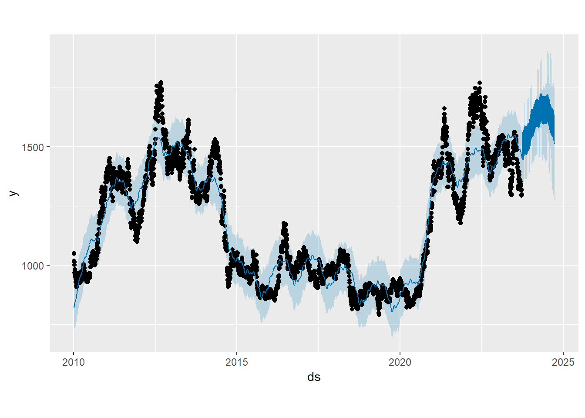
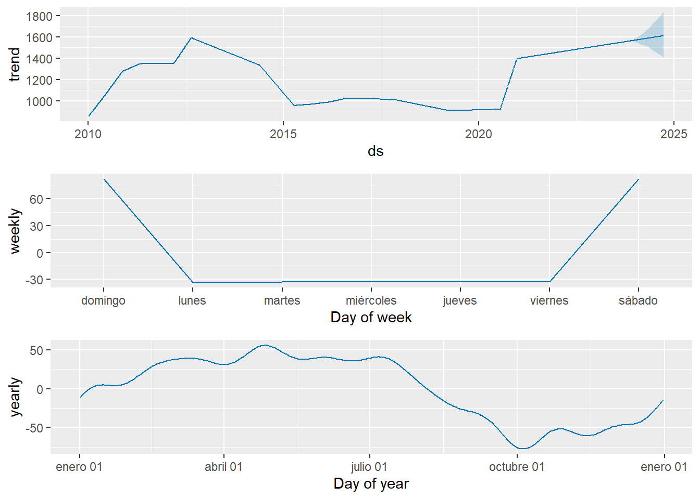

Chapter 13 Prophet
Prophet es especialmente útil para series de tiempo que tienen patrones estacionales fuertes y varios puntos de inflexión o “cambios de tendencia”. Fue diseñado para manejar datos diarios con al menos un año de historia y se espera que funcione bien con datos que tienen patrones estacionales y fechas festivas.
## Warning: package 'prophet' was built under R version 4.2.3## Loading required package: Rcpp## Warning: package 'Rcpp' was built under R version 4.2.3## Loading required package: rlang## Warning: package 'rlang' was built under R version 4.2.3# Acceder a la columna "ZS.F.Close" en soybean_xts
close_prices <- soybean_xts[, "ZS.F.Close"]
# Extrae las fechas
dates <- index(soybean_xts)
# Crea el dataframe
soybean_df <- data.frame(ds = as.Date(dates), y = as.numeric(close_prices))## ds y
## 1 2010-01-04 1049.50
## 2 2010-01-05 1052.25
## 3 2010-01-06 1050.50
## 4 2010-01-07 1017.75
## 5 2010-01-08 1013.00
## 6 2010-01-11 1001.75## Disabling daily seasonality. Run prophet with daily.seasonality=TRUE to override this.

library(ggplot2)
# Extraer datos del pronóstico
# forecast_data <- data.frame(
# ds = forecast$ds,
# yhat = forecast$yhat,
# yhat_lower = forecast$yhat_lower,
# yhat_upper = forecast$yhat_upper
#)
# Datos reales
#actual_data <- data.frame(ds = m$history$ds, y = m$history$y)
# Crear el gráfico con ggplot2
#p <- ggplot() +
# Intervalo de confianza
# geom_ribbon(data = forecast_data, aes(x = ds, ymin = yhat_lower, ymax = #yhat_upper, fill = "Intervalo de Confianza"), alpha = 0.4, inherit.aes = FALSE) +
# Línea de pronóstico
# geom_line(data = forecast_data, aes(x = ds, y = yhat, color = "Pronóstico"), size = 1, inherit.aes = FALSE) +
# Datos reales
# geom_point(data = actual_data, aes(x = ds, y = y, color = "Datos Reales"), size #= 2, inherit.aes = FALSE) +
# Tema y etiquetas
# theme_minimal() +
# labs(
# title = "Pronóstico del Precio del Aceite de Soya",
# x = "Fecha",
# y = "Precio"
# ) +
# scale_fill_manual(
#name = "Leyenda",
# values = c("Intervalo de Confianza" = "lightblue"),
# labels = c("Intervalo de Confianza")
# ) +
# scale_color_manual(
#name = "Leyenda",
# values = c("Datos Reales" = "#D55E00", "Pronóstico" = "#0072B2"),
# labels = c("Datos Reales", "Pronóstico")
# ) +
# theme(legend.position = "bottom")
# Mostrar gráfico
#print(p)# library(ggplot2)
# Extraer componentes del pronóstico
# components <- prophet_plot_components(m, forecast)
# Convertir el objeto básico de Prophet a ggplot
# p_components <- ggplot() +
# geom_line(data = components$data$yearly, aes(x = ds, y = y, color = "Componente # Anual"), size = 1) +
# geom_line(data = components$data$weekly, aes(x = ds, y = y, color = "Componente # Semanal"), size = 1) +
# geom_line(data = components$data$daily, aes(x = ds, y = y, color = "Componente # Diario"), size = 1) +
# geom_line(data = components$data$holidays, aes(x = ds, y = y, color = "Días # # Festivos"), size = 1) +
# theme_minimal() +
# labs(
# title = "Componentes del Pronóstico",
# x = "Fecha",
# y = "Valor"
# ) +
# scale_color_manual(
# name = "Leyenda",
# values = c("Componente Anual" = "blue", "Componente Semanal" = "green", #"Componente Diario" = "red", "Días Festivos" = "orange")
# ) +
# theme(legend.position = "bottom")
# Mostrar gráfico de componentes
#print(p_components)Conclusión: Se toman datos de la serie de tiempo histórica del precio del aceite de soya, creamos un modelo de pronóstico con Prophet, y se produce pronósticos para 365 días adicionales y luego visualiza esos pronósticos y sus componentes.
Si es viable la justificación para la variable en serie de tiempo vista como una regresión y prophet permite la incorporación de variables exógenas a través de los regresores e identifica automáticamente las estacionalidades diarias, semanales y anuales en los datos. También captura las tendencias a lo largo del tiempo y permite puntos de cambio en la tendencia.